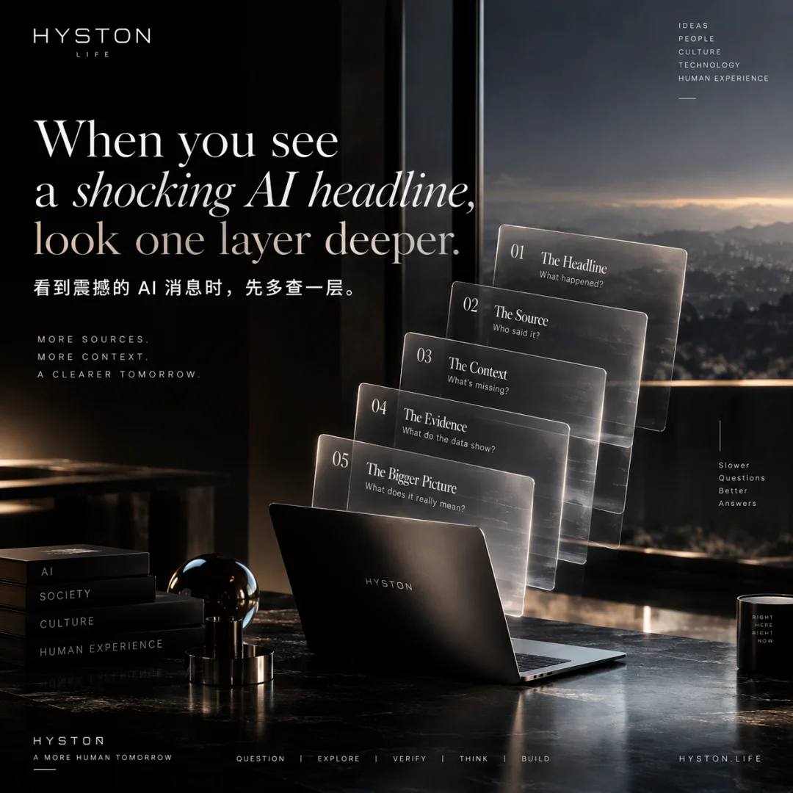

协会观察｜看到震撼的 AI 消息时，先多查一层

今天，一位关心我们发展的朋友转来了一条 AI 产品发布的视频。
因为是朋友特意分享的，我们把视频完整看完了。
视频讲述的经历很有冲击力：一位上市公司的新任负责人在发布会上推出 AI 产品，并讲述了自己在短短一年间取得的惊人进展。
上市公司、新任负责人、AI 产品、一年的时间跨度。这些信息放在一起，确实容易让人产生一种感觉：这个行业的变化，已经快得让人跟不上了。
但看完以后，我们有些疑惑。
这家上市公司原来做什么？什么时候开始进入 AI？演讲中的个人经历，与公司的业务发展是怎样对应的？这次发布的产品，实际走到了哪一步？
带着这些问题，我们继续查阅了公开资料，包括相关的 SEC 文件。
多查这一层以后，我们对这件事的理解变得具体了：原有的上市公司正在进行 AI 战略转型。
这句话听起来没有视频那么震撼，却为理解这场发布提供了重要背景。
一、几个信息放在一起，不等于所有环节都已经完成
"上市公司"说明的是公司的资本市场身份，"新任负责人"涉及管理层的变化，"发布 AI 产品"是一项产品动作，而战略转型的成效，则需要通过后续业务来观察。
这些信息可以同时成立，但它们各自回答的是不同的问题。
要判断一家公司的 AI 能力，还需要进一步了解产品、技术来源、团队、使用效果和实际交付。演讲中提到的个人经历，也需要具体资料才能确定它对应怎样的事实。
企业转型值得关注，新产品也值得试用。只是评价它走到了哪一步，应该有相应的依据。
这次查阅给我们的启发，就是把演讲中的信息拆开，再分别放回各自的背景中去理解。
二、焦虑，常常产生在信息被省略的地方
短视频的时间有限。一家公司的历史、积累、资源和转型过程，很难在几分钟里交代完整。
观众看到的，往往是最有冲击力的演讲片段、最成功的一次演示，以及最鲜明的结果。
至于用了多久、投入了多少、目前有哪些限制、还有什么问题需要解决，往往不会出现在同一个画面里。
这些空白，很容易被我们自行补上。
有人宣布进入一个领域，我们就以为他已经建立了成熟的业务；有人展示了一次效果，我们就以为这种效果已经可以稳定复制。
于是，一条关于别人进展的消息，变成了自己的焦虑：是不是又落后了？现在不跟上，是不是就再也没有机会了？
所以，我们想借这次经历说一句：先不用急着焦虑。
多查一点背景，很多原本模糊的压力，就会变成可以具体理解的问题。
三、为什么我们坚持回到一手信息
朋友愿意分享消息，这份心意很珍贵。认真看完之后继续查证，也是对这份分享的认真回应。
对于 AI 信息，我们希望尽量回到源头：
论文：可以看到研究实际解决了什么问题、在什么条件下测试，以及作者列出了哪些局限。
GitHub：可以看到公开代码、更新记录、许可证、问题反馈，以及别人能否复现。一个项目受到关注，并不说明它就适合自己的业务。
模型发布说明和 API 文档：可以帮助我们了解具体能力、使用条件和成本。
公司公告与 SEC 披露：可以帮助我们理解企业的业务背景和风险。但披露文件不能代替产品测试，更不能直接证明一项技术已经成熟。
亲自试用：最后，还要自己跑一遍产品。把真实任务交给它，看看结果能不能用、需要多少人工修改、花了多少时间、是否值得持续使用。
不同来源各有作用，把它们放在一起，判断才会更完整。
四、先把事实看清楚，再决定下一步
这次分享，我们最想留下的是一个简单的方法。
下一次看到令人震撼的 AI 消息，可以先问自己四个问题：
原始资料在哪里？
目前的证据支持什么结论？
还有哪些信息没有交代？
它对自己的工作究竟有什么实际价值？
AI 的变化值得认真学习。与此同时，我们也需要给判断留出时间，尤其是在准备投入资金、选择工具或调整方向的时候。
今天，因为一位朋友的转发，我们看完了一条视频；因为看完后仍有疑问，我们又继续查了资料。
把这个过程写下来，是希望大家下一次遇到类似的信息时，能多停留一会儿，看看它背后的具体事实。
协会也将继续与会员和社区朋友分享我们在实际使用 AI 过程中的经验，包括走通的，也包括还没走通的。
保持好奇，继续学习。也允许自己查清楚以后，再做决定。
澳洲川渝文化教育体育协会Australia Sichuan–Chongqing Culture, Education and Sports Association
Association Perspective | We Watched the AI Video. Then We Looked Further.
Today, a friend who cares about our progress sent us a video of an AI product launch.
Because they had taken the time to share it, we watched the video in full.
The story was striking: the newly appointed head of a publicly listed company introduced an AI product and described remarkable progress over just one year.
A listed company. New leadership. An AI product. A one-year timeframe. Taken together, these details can easily leave viewers feeling that the industry is moving faster than they can keep up.
But after watching, we had questions.
What had the company’s original business been? When had it entered AI? How did the speaker’s personal journey relate to the company’s development? And what stage had the product actually reached?
With those questions in mind, we looked further into public information, including relevant SEC filings.
That additional research gave us a more specific understanding: an existing publicly listed company was undertaking a strategic transformation toward AI.
That description may sound less dramatic than the video, but it provides important context for understanding the launch.
Putting several facts together does not mean every stage is complete
“Publicly listed” describes a company’s capital-market status. “Newly appointed head” refers to a leadership change. “Launching an AI product” describes a product milestone. The results of a strategic transformation need to be assessed through the business’s subsequent performance.
All of these facts can be true at the same time, while answering different questions.
Assessing a company’s AI capabilities requires a closer look at its products, technology sources, team, practical results and ability to deliver. Personal experiences described in a speech also require supporting information to establish the underlying facts.
Business transformations deserve attention, and new products are worth trying. Assessments of how far they have progressed should be supported by corresponding evidence.
Our takeaway from this research was to separate the information presented in the speech and understand each part in its own context.
Anxiety often grows where information is missing
A short video has limited time. A company’s history, accumulated experience, resources and transformation process are difficult to explain fully in a few minutes.
Viewers often see the most compelling part of a speech, the most successful demonstration and the most striking result.
How long it took, how much was invested, what limitations remain and which problems still need solving often do not appear in the same frame.
It is easy to fill in those gaps ourselves.
Someone announces that they are entering a field, and we assume they have already built a mature business. Someone demonstrates a result, and we assume it can already be reproduced reliably.
News about someone else’s progress then becomes our own anxiety: Are we falling behind again? If we do not catch up now, will we miss our chance altogether?
This experience reminded us of something worth sharing: there is no need to rush into anxiety.
A little more context can turn a vague sense of pressure into questions we can actually understand and examine.
Why we keep returning to primary sources
We value the thoughtfulness of friends who share information with us. Watching carefully and then checking the facts is also a way of taking that gesture seriously.
For AI-related information, we try to get as close to the source as possible:
Research papers show what problem a study addressed, the conditions under which it was tested and the limitations its authors identified
GitHub provides access to public code, update histories, licences, issue reports and evidence of whether others can reproduce the results. Attention alone does not establish that a project suits our business
Model release notes and API documentation help clarify capabilities, conditions of use and costs
Company announcements and SEC filings help explain a business’s background and risks. Disclosures cannot replace product testing or directly establish that a technology is mature
Hands-on testing remains essential. Give the product a real task and assess whether the output is usable, how much human revision it needs, how long it takes and whether continued use is worthwhile
Each source serves a different purpose. Considering them together gives us a more complete basis for judgment.
Understand the facts before deciding what comes next
The main thing we want to share is a simple approach.
The next time an AI story feels astonishing, ask four questions:
Where is the original source?
What conclusion does the available evidence support?
What information has not been provided?
What practical value does this have for my own work?
Developments in AI deserve serious attention and learning. At the same time, we need to leave room for judgment, especially when preparing to invest money, choose tools or change direction.
Today, a friend’s message led us to watch a video. The questions we had afterwards led us to look further.
We are sharing that process in the hope that, when similar information reaches you, you will take a moment to examine the specific facts behind it.
Our association will continue sharing practical experiences of using AI with our members and community, including what has worked and what we have yet to make work.
Stay curious. Keep learning. And give yourself permission to understand the facts before making a decision.
Australia Sichuan–Chongqing Culture, Education and Sports Association